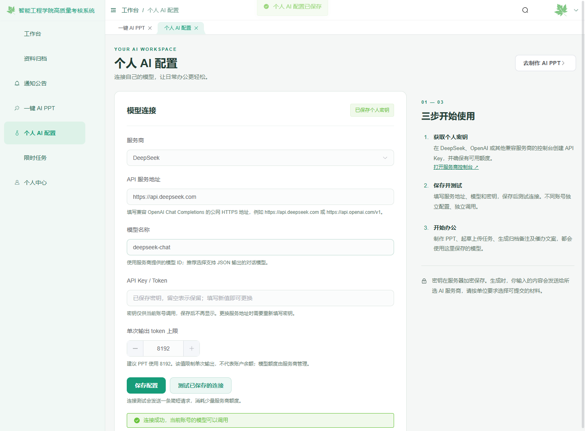
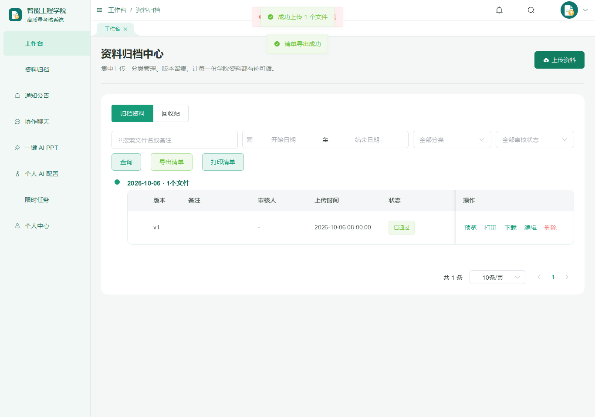

ENGINEERING HIGHLIGHT / AI OFFICE
Personal AI Workspace & Document Automation
A full-stack module within a college archive and collaboration system: connect each user's model, create editable presentation drafts, then keep business actions under human control.
- Project type
- Existing system module
- Public material
- Synthetic screenshots & engineering notes
- Evidence scope
- Recorded tests; external AI mocked
01 / ARCHITECTURE & TRUST BOUNDARIES
Model connection and account settings
Credentials, destination URLs, submitted text, generated files and business actions cross different trust boundaries.
The public material is a reviewed engineering case, synthetic screenshots and reusable notes. The original full-stack source, configuration, dependencies and private deployment material are not published.
02 / HUMAN-IN-THE-LOOP WORKFLOWS
Choose a workflow
These are explanatory product contracts, not live model calls.
01Editable presentationAI → PPTX
- Set topic, audience, purpose and page count.
- Generate a structured draft, then review and edit each slide and speaker note.
- Export native editable text and shapes. If export fails, retry the download without calling the model again.
Guardrail: generation does not save a presentation to a shared server or publish it.
02Task and archive draftsAI → REVIEW
- Send only the text the user chooses to the configured provider.
- Return a suggestion into the existing form; the user checks facts and edits wording.
- The existing save action remains separate and requires an explicit user action.
Guardrail: a successful model response is a draft, not a persisted business record.
03Reminder copyAI → HUMAN SEND
- Draft a message from the selected task context.
- Check the recipient, timing and content in the original workflow.
- The user chooses whether to send. Retry and error handling must not create duplicate messages.
Guardrail: model output cannot send a notice by itself.
03 / INTERFACE EVIDENCE
Historical configuration and test scope
Screenshots are from local automated test fixtures with synthetic content. No real API key is shown.


04 / VALIDATION RECORD & LIMITS
Request checks with a mock service
Results below are documented for the existing project; this portfolio update did not rerun the full application suite.
| Check | Recorded result | Scope and limit |
|---|---|---|
| Backend AI contract tests | 25 passed; 1 existing capacity test skipped. | Mock HTTP provider; account binding, encrypted secret, endpoint policy, errors and timeouts. No paid API request. |
| Frontend & export | Production build and PPT-export TypeScript checks passed. | Native text, slide count, speaker notes and editable re-export checked in the browser fixture. |
| AI workspace browser flow | Edge run with mocked business APIs; key is not stored in browser storage. | Real provider credentials, actual service latency/quota and PowerPoint/WPS application rendering were not tested. |